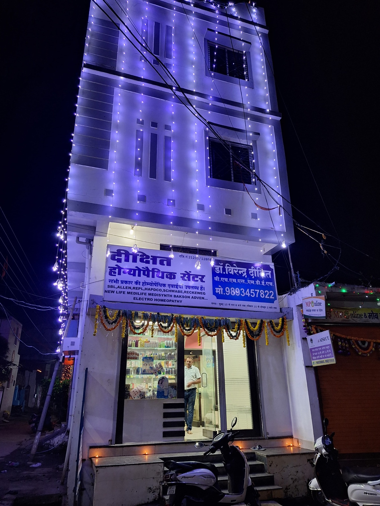

HOMŒOPATHY · BUDHI, BALAGHAT
Care that begins
with listening.
A thoughtful, personal approach to homoeopathic care for you and your family. Begin with a conversation and take the next step at your own pace.
DR. VIRENDRA DIXIT24 YEARS OF CARE LISTEDBUDHI · BALAGHAT

A GOOD PLACE TO BEGIN
Care, made personal.
Explore the centre, browse the care topics listed by the clinic, or plan your visit to Budhi.
YOUR NEXT STEP